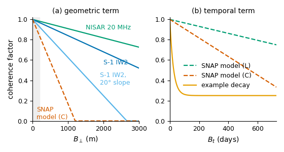
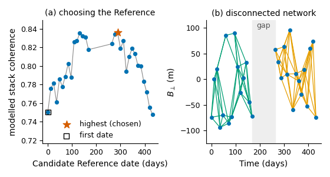

| SAR Concepts: Baselines and Stack Design | |
A multi-date InSAR analysis is only as good as its pairs. The Reference date, the pairs and how they connect decide how much coherence survives, how much DEM error leaks into the phase, and whether the time series can be inverted. Basics are in InSAR Fundamentals.
Four numbers describe a pair: the perpendicular baseline B⊥ (height sensitivity, geometric decorrelation), the parallel baseline B∥ (mostly flat-Earth phase), the temporal baseline Bt and the Doppler-centroid difference ΔfDC. Height sensitivity is given by the height of ambiguity h2π or the vertical wavenumber kz (repeat pass; R slant range, θ incidence angle, λ wavelength):
h2π = λ R sin θ / (2 B⊥), kz = 2π / h2π = 4π B⊥ / (λ R sin θ)
A height error Δh adds the phase kz Δh. For Sentinel-1 IW with B⊥ = 150 m, kz ≈ 0.062 rad/m (h2π ≈ 100 m): a 10 m DEM error mimics about 3 mm of line-of-sight motion.
Going beyond InSAR Fundamentals: the range spectra of the two images are shifted by Δf = −f0 B⊥ / (R tan(θ − α)) (Gatelli et al., 1994; f0 carrier frequency, α terrain slope towards the radar). At |Δf| = Br, the range bandwidth, nothing is common (Zebker & Villasenor, 1992; c speed of light):
B⊥,crit = λ R tan(θ − α) Br / c
| Mission (mode) | λ | Br | R | θ | B⊥,crit (flat) |
|---|---|---|---|---|---|
| Sentinel-1 IW1 / IW2 / IW3 | 5.55 cm | 56.5 / 48.2 / 42.8 MHz | 810 / 865 / 910 km | 33 / 39 / 43° | 5.5 / 6.2 / 6.7 km |
| TerraSAR-X StripMap | 3.11 cm | 150 MHz (100 MHz) | 616 km | 35° | 6.7 km (4.5 km) |
| ALOS-2 StripMap Ultra-fine | ≈ 24 cm | 84 MHz | 750 km | 35° | 35 km |
| ALOS-2 StripMap Fine | ≈ 24 cm | 28 MHz | 750 km | 35° | 12 km |
| NISAR L-band, 20 MHz | ≈ 24 cm | 20 MHz | 909 km | 37° | 11 km |
Table 1. Critical baseline on flat terrain (α = 0). Slant ranges for a spherical Earth from orbit heights of 693, 514, 628 and 747 km, as in the InSAR Fundamentals table. A 20° slope facing the radar lowers the Sentinel-1 IW2 value from 6.2 to 2.7 km.
Sentinel-1 baselines (up to about 200 m) use a few percent of this limit; for modern missions time, slope and DEM error usually bind first.
Coherence is roughly a product of independent factors (volume and thermal terms are in InSAR Fundamentals):
These are planning models; measure real coherence with the Coherence operator (Coherence). The InSAR Stack Overview multiplies three linear terms g(x, c) = 1 − |x|/c (0.01 when |x| > c), with constants per wavelength band (Table 2). Its C-band 1200 m and 1380 Hz are ERS-era values (ERS B⊥,crit ≈ 1.1 km): for Sentinel-1 it overstates the geometric loss about fivefold, and its slow linear temporal term overstates long pairs over vegetation (Figure 1). Use it to rank dates, not to predict coherence.
| Band (λ) | B⊥ constant | Bt constant | ΔfDC constant |
|---|---|---|---|
| X (2.5–4 cm) | 600 m | 730 days | 2200 Hz |
| C (4–8 cm) | 1200 m | 1095 days | 1380 Hz |
| S (8–15 cm) | 2500 m | 1825 days | 1500 Hz |
| L (15–30 cm) | 6000 m | 2920 days | 1500 Hz |
| P (30–100 cm) | 12000 m | 3650 days | 1200 Hz |
Table 2. Model constants c of the InSAR Stack Overview, chosen from the Reference wavelength (C-band if the wavelength is outside these ranges).

Figure 1. (a) Geometric term against B⊥ for NISAR 20 MHz (B⊥,crit ≈ 11 km), Sentinel-1 IW2 (6.2 km), IW2 on a 20° slope facing the radar (2.7 km), and the C-band InSAR Stack Overview model (1.2 km). The grey band marks typical Sentinel-1 baselines (0–200 m). (b) Temporal term: the model's linear terms (C 1095 days, L 2920 days) and an illustrative exponential decay (τ = 24 days, floor 0.25), which is an example and not a fit to data.
In a single-reference stack every interferogram contains the Reference. Pick the date with the highest modelled stack coherence, the mean modelled coherence over all its pairs (Kampes, 2006): usually a date near the middle of the time span and of the B⊥ spread (Figure 2a). The model cannot see snow, rain or acquisition problems; check the candidate. For small-baseline and phase-linking work the stack Reference only provides the geometry.

Figure 2. Synthetic 30-date Sentinel-1-like stack (12-day repeat, seven missed acquisitions, |B⊥| ≤ 100 m). (a) Modelled stack coherence for each candidate Reference, computed as the InSAR Stack Overview does: the first and last dates score lowest, the best date (star) lies well inside the stack, away from both ends. (b) Small-baseline network with Bt ≤ 48 days and |ΔB⊥| ≤ 150 m: no pair crosses the gap, so the two groups (green, orange) are not connected.
Multilooked interferograms of distributed scatterers do not close around a triplet of dates
(InSAR Time Series). Ansari, De Zan & Parizzi (2021) describe a short-lived
"fading signal" that is strongest in short-temporal-baseline interferograms and decays with Bt; a
network of only short pairs sums it into a velocity bias, so add longer pairs or phase-link first
(Phase Linking in Depth). SBAS Inversion's closure_phase_rms wraps
each closure to (−π, π], so it misses whole-cycle unwrapping errors
(Quality Control).
InSAR-Overview writes the same to a JSON file (overviewJSONFile,
SLC inputs only), with track, pass and mode for every product and an
insar_overview block per Secondary.Baselines
element in the Abstracted Metadata.MultiMasterInSAR) forms the pairs given in
pairs (ddMMMyyyy-ddMMMyyyy) from one coregistered stack. With
pairs empty it forms the sequential network. Its dialog sliders for the maximum temporal, Doppler
and spatial baseline differences only fill pairs. The
wavenumber bands (on by default, radians/meter) give kz of each Secondary
relative to the stack Reference; for a pair of two Secondaries, take the difference.MultiMasterStackGenerator) writes N−1 consecutive-date pair products
(A–B, B–C, …) to an output folder, for external tools such as PyRate. Multi-Reference
InSAR does not need it.closure_phase_rms uses only
triplets whose three pairs all pass the threshold; where there is none (everywhere, for a sequential
network) it is no-data. See InSAR Time Series.track,
pass and mode in the overview JSON.closure_phase_rms as a full network check. A sequential network has no triplets,
so the band is no-data, and where it exists it cannot see whole-cycle unwrapping errors.Related concepts: InSAR, coherence, coregistration, InSAR time series, phase linking, glossary, bibliography.
Workflows: InSAR Time Series.